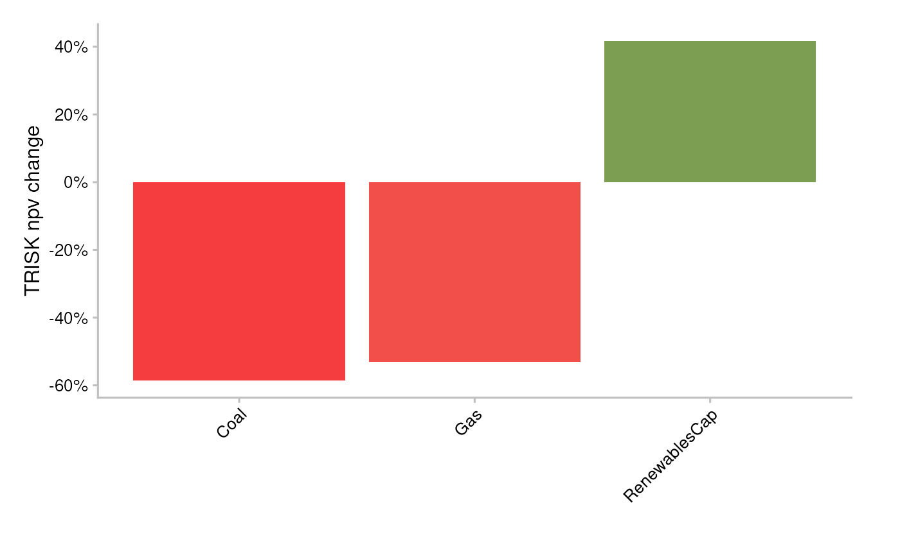
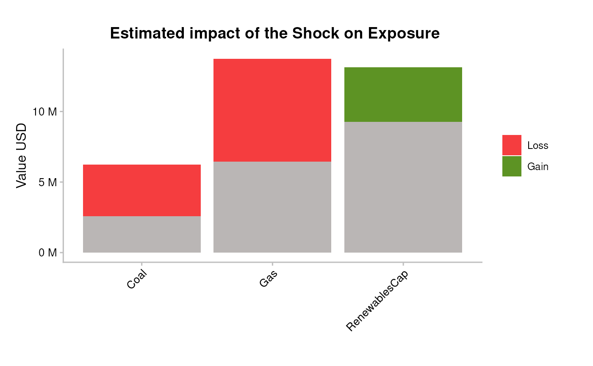
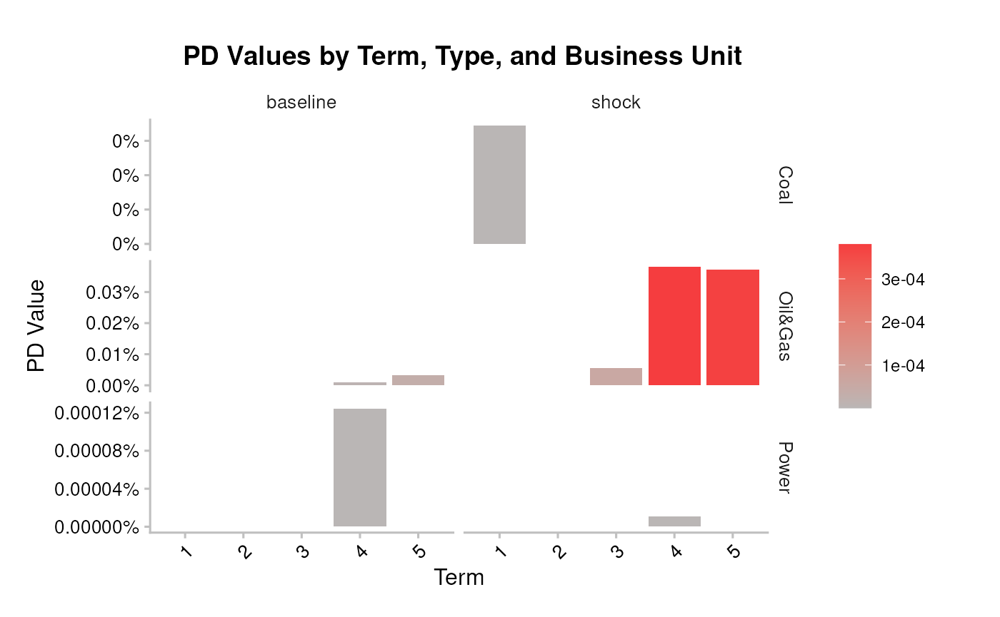
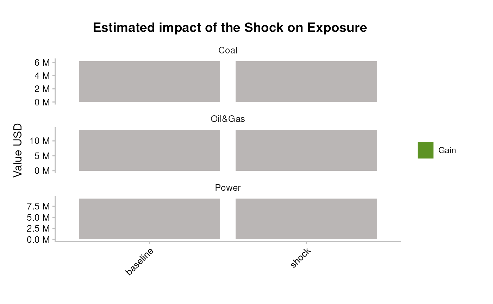
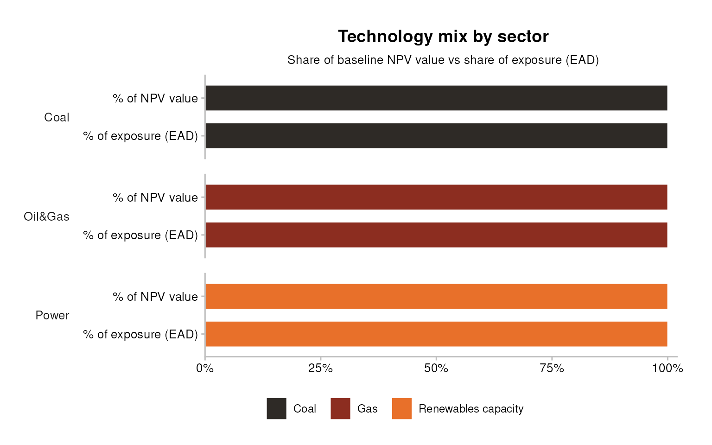

Bank workflow 2: Simple portfolio analysis
Source:vignettes/bank_2_simple-portfolio-analysis.Rmd
bank_2_simple-portfolio-analysis.Rmd
library(trisk.analysis)
library(dplyr)
#>
#> Attaching package: 'dplyr'
#> The following objects are masked from 'package:stats':
#>
#> filter, lag
#> The following objects are masked from 'package:base':
#>
#> intersect, setdiff, setequal, union
library(magrittr)Overview
This vignette walks through running TRISK on a bank loan book with
run_trisk_on_simple_portfolio() — the bank entry point. You
bring company exposures, terms, and loss-given-default (no
country_iso2 column needed), and TRISK runs and allocates
each loan’s exposure across the company’s technologies for you. The
per-technology results feed the equity- (NPV, exposure) and credit-risk
(PD, expected-loss) plots directly.
Inputs
Input data — where your data goes. TRISK needs five inputs: four that describe the world — assets, scenarios, NGFS carbon price and financial features — plus your portfolio. The main portfolio file is
portfolio_ids(matched bycompany_id);portfolio_namesandportfolio_countriesare options. The CSVs loaded below are placeholders (bundled samples) — replace them with your own files. See Inputs and outputs forsetup_trisk_inputs()and thetrisk_inputs/folder convention.
The simple runner needs the four TRISK model inputs, shipped as test
data in the trisk.model package:
assets_testdata <- read.csv(system.file("testdata", "assets_testdata.csv", package = "trisk.model", mustWork = TRUE))
# NGFS 2024 scenarios start in 2023; the bundled assets reach back to 2022 and
# TRISK errors on assets outside the scenario window, so scope to 2023 onward.
assets_testdata <- assets_testdata[assets_testdata$production_year >= 2023, ]
scenarios_testdata <- read.csv(system.file("testdata", "scenarios_testdata.csv", package = "trisk.model", mustWork = TRUE))
financial_features_testdata <- read.csv(system.file("testdata", "financial_features_testdata.csv", package = "trisk.model", mustWork = TRUE))
ngfs_carbon_price_testdata <- read.csv(system.file("testdata", "ngfs_carbon_price_testdata.csv", package = "trisk.model", mustWork = TRUE))They also share the same scenario settings — a baseline and a target scenario, plus the geography to evaluate:
baseline_scenario <- "NGFS2024GCAM_CP"
target_scenario <- "NGFS2024GCAM_NZ2050"
scenario_geography <- "Global"The portfolio schema is covered in the example below.
Minimal example
run_trisk_on_simple_portfolio() expects a portfolio with
just five columns:
company_idcompany_nameexposure_value_usdtermloss_given_default
No country_iso2 is required. Load the bundled simple
portfolio:
simple_portfolio <- read.csv(
system.file("testdata", "simple_portfolio.csv", package = "trisk.analysis", mustWork = TRUE)
)
simple_portfolio
#> company_id company_name exposure_value_usd term loss_given_default
#> 1 101 <NA> 2222222 2 0.7
#> 2 101 <NA> 3333333 3 0.7
#> 3 101 <NA> 4444444 4 0.7
#> 4 102 Company1 6227364 1 0.7
#> 5 103 Company2 3728364 5 0.5
#> 6 104 Company3 9263702 4 0.4Run the model:
simple_results <- run_trisk_on_simple_portfolio(
assets_data = assets_testdata,
scenarios_data = scenarios_testdata,
financial_data = financial_features_testdata,
carbon_data = ngfs_carbon_price_testdata,
portfolio_data = simple_portfolio,
baseline_scenario = baseline_scenario,
target_scenario = target_scenario,
scenario_geography = scenario_geography
)
#> -- Start Trisk-- Retyping Dataframes.
#> -- Processing Assets and Scenarios.
#> -- Transforming to Trisk model input.
#> -- Calculating baseline, target, and shock trajectories.
#> -- Applying zero-trajectory logic to production trajectories.
#> -- Calculating net profits.
#> Joining with `by = join_by(asset_id, company_id, sector, technology)`
#> -- Calculating market risk.
#> -- Calculating credit risk.
portfolio_results_tech_detail <- simple_results$portfolio_results_tech_detail
portfolio_results <- simple_results$portfolio_resultsNPV-based exposure allocation
The simple runner adds a column the full runner does not:
exposure_value_usd_share. A single loan exposure has to be
spread across the company’s technologies before technology-level risk
can be attributed to it. TRISK allocates exposure from baseline NPV
shares at company/sector/technology level:
- compute baseline NPV share per run;
- allocate exposure with that share;
- average after dropping
run_id; - re-scale so exposure totals match the original portfolio exposure.
portfolio_results_tech_detail |>
dplyr::select(
company_id, term, sector, technology,
exposure_value_usd_share,
net_present_value_baseline
) |>
utils::head(10)
#> company_id term sector technology exposure_value_usd_share
#> 1 101 2 Oil&Gas Gas 2222222
#> 2 101 3 Oil&Gas Gas 3333333
#> 3 101 4 Oil&Gas Gas 4444444
#> 4 102 1 Coal Coal 6227364
#> 5 103 5 Oil&Gas Gas 3728364
#> 6 104 4 Power RenewablesCap 9263702
#> net_present_value_baseline
#> 1 33477.77
#> 2 33477.77
#> 3 33477.77
#> 4 8800418.66
#> 5 17134142.10
#> 6 89669830.81Because exposure_value_usd_share is computed after
dropping run_id, it is constant across runs for a given
(company_id, term, sector, technology).
exposure_share_check <- portfolio_results_tech_detail |>
dplyr::distinct(
company_id, term, sector, technology,
exposure_value_usd_share
) |>
dplyr::group_by(company_id, term) |>
dplyr::summarise(allocated_exposure = sum(exposure_value_usd_share, na.rm = TRUE), .groups = "drop") |>
dplyr::left_join(
portfolio_results |>
dplyr::group_by(company_id, term) |>
dplyr::summarise(original_exposure = sum(exposure_value_usd, na.rm = TRUE), .groups = "drop"),
by = c("company_id", "term")
) |>
dplyr::mutate(gap = allocated_exposure - original_exposure)
exposure_share_check
#> # A tibble: 6 × 5
#> company_id term allocated_exposure original_exposure gap
#> <chr> <int> <dbl> <int> <dbl>
#> 1 101 2 2222222 2222222 0
#> 2 101 3 3333333 3333333 0
#> 3 101 4 4444444 4444444 0
#> 4 102 1 6227364 6227364 0
#> 5 103 5 3728364 3728364 0
#> 6 104 4 9263702 9263702 0The gap column should be close to zero (floating-point
tolerance) — confirming allocated exposure reconciles back to the
original loan amounts.
Plotting the per-technology results
The simple runner’s portfolio_results_tech_detail
carries per-technology NPV, PD, and expected-loss columns — exactly what
the package plotting helpers need. Expose the NPV-share-allocated
exposure (exposure_at_default) as
exposure_value_usd so the plots can aggregate it, then pass
the frame in:
npv_analysis <- portfolio_results_tech_detail |>
dplyr::mutate(exposure_value_usd = exposure_at_default)Equity risk — average percentage NPV change per technology:
pipeline_trisk_npv_change_plot(npv_analysis)
#> Joining with `by = join_by(sector, technology)`
Resulting portfolio exposure change:
pipeline_trisk_exposure_change_plot(npv_analysis)
#> Joining with `by = join_by(sector, technology)`
Bonds & loans risk — average PDs at baseline and shock:
pipeline_trisk_pd_term_plot(npv_analysis)
#> Joining with `by = join_by(sector, term)`
Resulting portfolio expected loss:
pipeline_trisk_expected_loss_plot(npv_analysis)
#> Joining with `by = join_by(sector)`
Technology mix: NPV value vs exposure
pipeline_trisk_tech_mix() shows each sector’s technology
composition two ways — as a share of baseline NPV value and as a share
of exposure (EAD) — with technologies rendered as shades of the sector’s
colour (darkest = most carbon-intensive). The two bases can disagree: a
technology can be a large share of value yet a small share of
exposure (or the reverse), so reporting only one basis can
mislead the credit read. On a small bundled book a sector may resolve to
a single technology; richer multi-technology counterparties fill the mix
out.
pipeline_trisk_tech_mix(npv_analysis)
Interpretation
- The simple runner is the fastest way to attribute
climate transition risk to a known book. Its
exposure_value_usd_sharelets you see how each loan’s exposure spreads across a company’s technologies, so you can spot which technology mix drives a counterparty’s risk. - A negative NPV change and a rising shock PD on the same technology flag where the transition both erodes asset value and lifts default probability — the positions to scrutinise first.
Caveats
- Exposure allocation in the simple runner is NPV-share based and
reconciles to the original totals only up to floating-point tolerance —
confirm the
gapbefore relying on allocated figures. - The scenarios, geography, and bundled test data here are illustrative. Swap in your own asset, scenario, financial, and carbon-price inputs for production analysis.